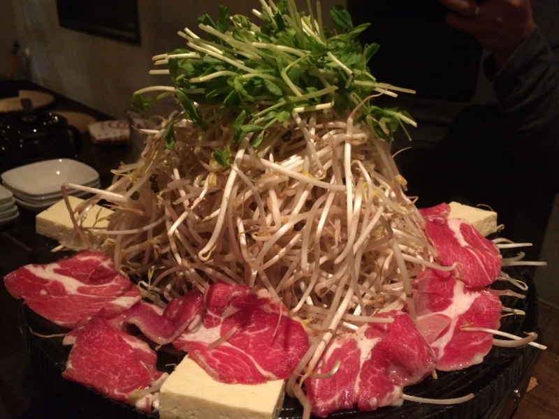

4日間禁酒した / ヒツジ年なので新年会はヒツジ食べることにした
公開日：

今年は禁酒することに決めた。ただし、完全に禁酒すると死ぬと思ったので、以下の例外は設けている。
- 禁酒は平日に限る。土日祝日は飲んでもよい
- 平日であっても、飲み会ならば飲んでもよい
- サッカーを観戦するときは、飲んでもよい
- そのた、やむにやまれぬ理由がある場合は飲んでもよい
今週の場合、金曜日は新年会なので飲んでもよいが、月曜から木曜は飲んではいけない。つまり、4日間禁酒しなければならなかったわけだ。
しかし、これは思いのほか辛かった。
Twitter で「四肢が痙攣する」とかつぶやいていたのはさすがに冗談だったが、なんとなく全身がだるい。そしてなにより、まったく寝付けない。明け方にようやく寝て、数時間浅く眠り、起きて仕事をするという生活が続き、発狂寸前だった。
おかげで、バンダイチャンネルでアニメを数本制覇してしまった。
ひとつめは「SAMURAI 7」。黒澤明監督の『七人の侍』を SF 風にアレンジしてアニメ化したものだそうで、なかなか面白かった。もっと凝縮して、劇場版にすればもっとウケたんじゃないかなーと思わないでもない。
ふたつ目は「それでも世界は美しい」。有能だが心の乾いた太陽王を、雨の国から嫁いだ姉さん女房ニケが潤していくお話。ジャンル的には「姉ショタ」なのかも。あと、王さまのセリフがたまにクソ寒いので、女の子向けだなーと思った。ニケの歌う雨を呼ぶ歌が JPOP 風なのには思わず突っ込みを入れてしまったが、全体的にはいいお話。表情豊かなキャラクターがとても魅力的だった。
みっつ目は「魔乳秘剣帖」。故あって、画像は割愛させていただく。
時は太平の世・江戸時代。そこは乳のデカさが理とされる世界だった。なかでも胸を豊かにする豊胸術と、胸を斬り奪う「乳斬り」の技を独占する魔乳一族は、幕閣を裏から操るほどの権勢を誇っていた。その魔乳一族と、関が原で滅ぼされた胸守一族の間に生まれたチブサは、そんな世の中に疑問を感じ、乳を自在にやり取りできるという胸守一族の秘術「乳流れ」を求めて魔乳一族を出奔する――。
正直意味不明だったが、そこがシュールで面白かった。なお、バンダイチャンネルでは謎の光さんの活躍でおっぱいは見れない。残念だったな、諸君！

そんなこんなで、とても寝不足だったのだけど、新年会でヒツジとビール食べたおかげで復活。翌日は丸一日（！）寝て、すっかり元気になった。目が覚めたら外が暗かったので二度寝しようと思ったが、よくよく時計を見ると日が落ちたから暗いだけだった。
I'm at さわ家 https://t.co/58YWP8cTGB
— 俺、だるやなぎになります。 (@daruyanagi) 2015, 1月 9